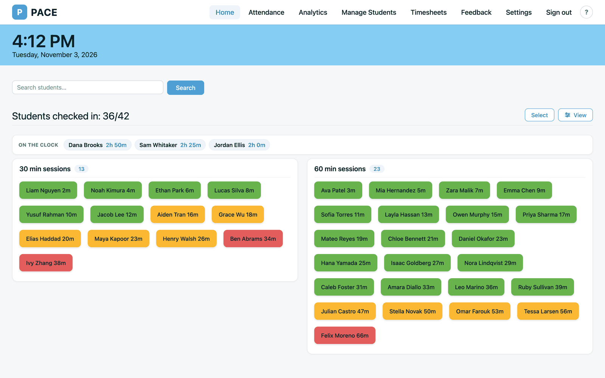
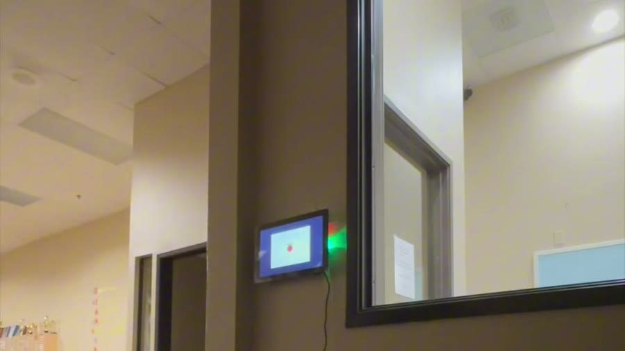
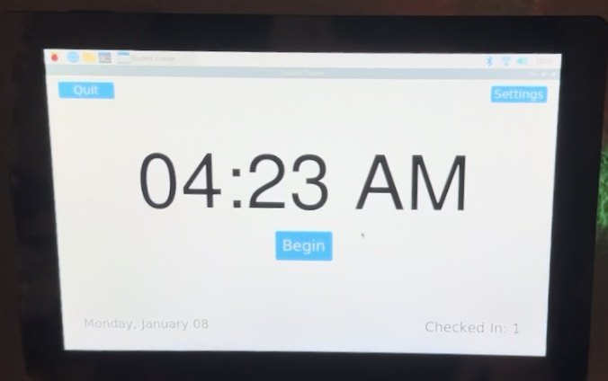
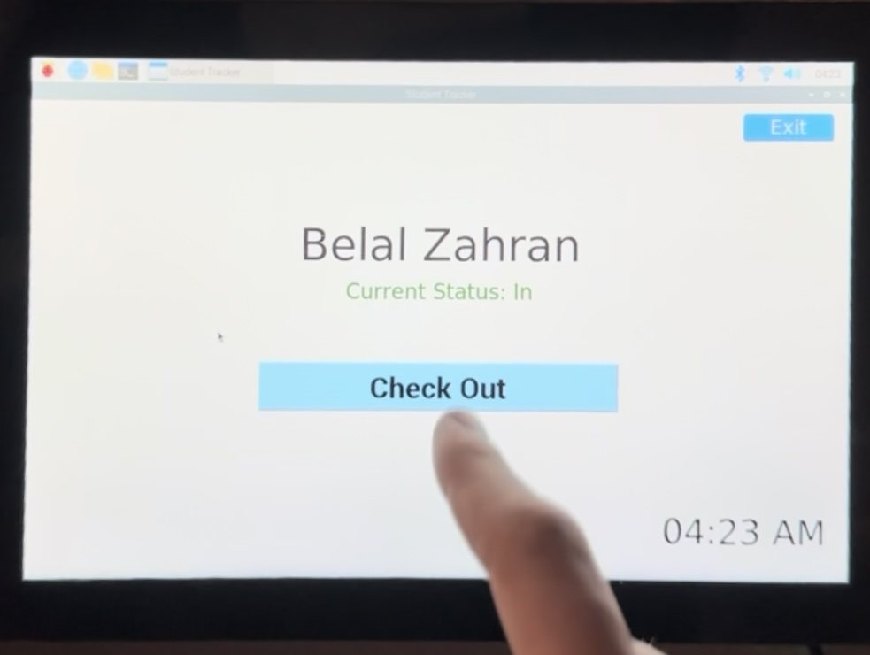
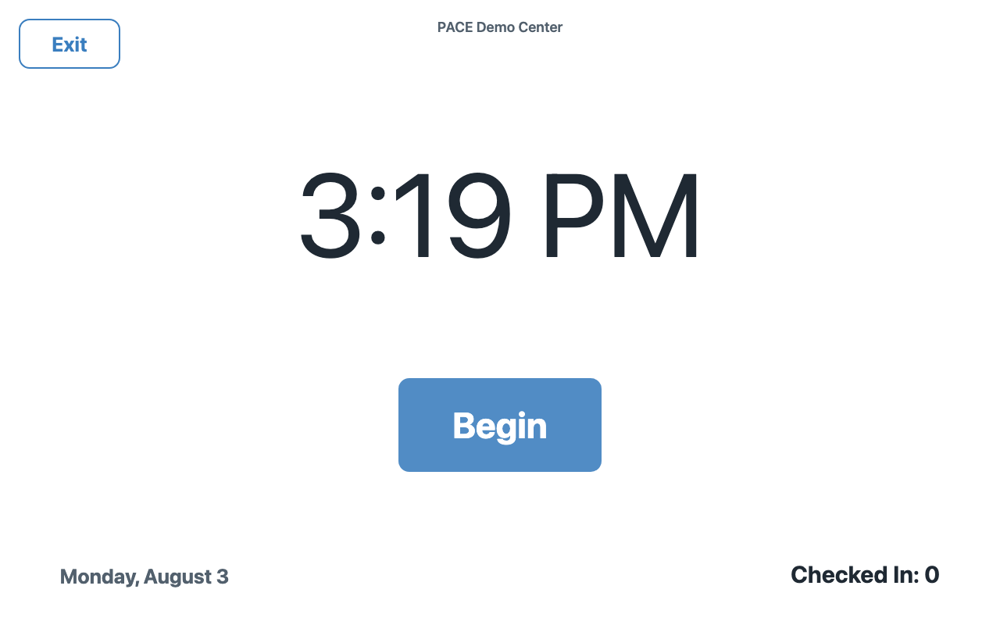
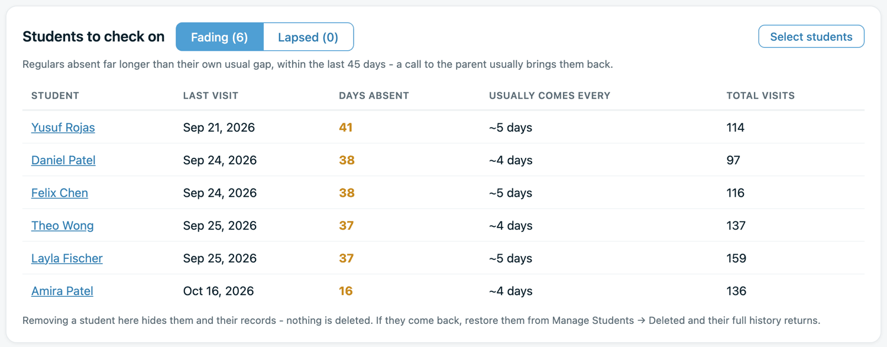

PACE
Multi-tenant student check-in and attendance software for learning centers. Adopted by dozens of Kumon centers across 9 US states, tracking 1,200+ students and 19,000+ check-ins across its active centers.
- Role
- Founder and sole developer
- Timeline
- Sept 2023 to present
- Stack
- React, TypeScript, Supabase, Stripe
- Live at
- paceattend.com

Where it started
I had just finished an internship at Karma Automotive, where I built a VIN flasher in Python on a touchscreen Raspberry Pi. When my mom told me how hard it was to keep track of attendance at her Kumon center, I saw a way to solve it with the same hardware, and offered to build and install it.
Version 1, built in my room
The first version was a two-part system, written almost entirely by hand:
- A kiosk: Python on a touchscreen Raspberry Pi, hosting MySQL
- A website: a Flask server and React front end for admin and rosters
- Backups: a Bash script over SSH, saved to my home server
I mounted it on the wall of the center on January 8, 2024. It ran there for two years.



PACE today
In 2026 I rebuilt it and launched it commercially on React, TypeScript, Supabase (Postgres, Auth, Realtime) and Stripe. Every center's data is isolated with Postgres row-level security, verified by 186 automated tests. The Raspberry Pi is gone: the kiosk is now a web app that runs on an iPad at the front desk.
Staff see the room live, and owners get the records behind it: attendance history, and a list of regulars who have been away longer than their usual gap, so a call to the parent happens before the student quietly stops coming.
I run the whole business solo: product, infrastructure, legal terms, pricing, support, and outreach to center owners.

